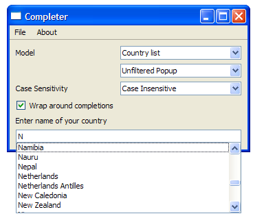

Completer Example
The Completer example shows how to provide string-completion facilities for an input widget based on data provided by a model.

This example uses a custom item model, FileSystemModel, and a QCompleter object. QCompleter is a class that provides completions based on an item model. The type of model, the completion mode, and the case sensitivity can be selected using combo boxes.
The Resource File
The Completer example requires a resource file in order to store the countries.txt and words.txt. The resource file contains the following code:
<!DOCTYPE RCC><RCC version="1.0">
<qresource prefix="/">
<file>resources/countries.txt</file>
<file>resources/wordlist.txt</file>
</qresource>
</RCC>
FileSystemModel Class Definition
The FileSystemModel class is a subclass of QFileSystemModel, which provides a data model for the local filesystem.
class FileSystemModel : public QFileSystemModel { public: FileSystemModel(QObject *parent = nullptr); QVariant data(const QModelIndex &index, int role = Qt::DisplayRole) const override; };
This class only has a constructor and a data() function as it is only created to enable data() to return the entire file path for the display role, unlike QFileSystemModel's data() function that only returns the folder and not the drive label. This is further explained in FileSystemModel's implementation.
FileSystemModel Class Implementation
The constructor for the FileSystemModel class is used to pass parent to QFileSystemModel.
FileSystemModel::FileSystemModel(QObject *parent) : QFileSystemModel(parent) { }
As mentioned earlier, the data() function is reimplemented in order to get it to return the entire file path for the display role. For example, with a QFileSystemModel, you will see "Program Files" in the view. However, with FileSystemModel, you will see "C:\Program Files".
QVariant FileSystemModel::data(const QModelIndex &index, int role) const { if (role == Qt::DisplayRole && index.column() == 0) { QString path = QDir::toNativeSeparators(filePath(index)); if (path.endsWith(QDir::separator())) path.chop(1); return path; } return QFileSystemModel::data(index, role); }
The Qt::EditRole, which QCompleter uses to look for matches, is left unchanged.
MainWindow Class Definition
The MainWindow class is a subclass of QMainWindow and implements five private slots - about(), changeCase(), changeMode(), changeModel(), and changeMaxVisible().
class MainWindow : public QMainWindow { Q_OBJECT public: MainWindow(QWidget *parent = nullptr); private slots: void about(); void changeCase(int); void changeMode(int); void changeModel(); void changeMaxVisible(int);
Within the MainWindow class, we have two private functions: createMenu() and modelFromFile(). We also declare the private widgets needed - three QComboBox objects, a QCheckBox, a QCompleter, a QLabel, and a QLineEdit.
private: void createMenu(); QAbstractItemModel *modelFromFile(const QString &fileName); QComboBox *caseCombo = nullptr; QComboBox *modeCombo = nullptr; QComboBox *modelCombo = nullptr; QSpinBox *maxVisibleSpinBox = nullptr; QCheckBox *wrapCheckBox = nullptr; QCompleter *completer = nullptr; QLabel *contentsLabel = nullptr; QLineEdit *lineEdit = nullptr; };
MainWindow Class Implementation
The constructor of MainWindow constructs a MainWindow with a parent widget and initializes the private members. The createMenu() function is then invoked.
We set up three QComboBox objects, modelComb, modeCombo and caseCombo. By default, the modelCombo is set to QFileSystemModel, the modeCombo is set to "Filtered Popup" and the caseCombo is set to "Case Insensitive".
MainWindow::MainWindow(QWidget *parent) : QMainWindow(parent) { createMenu(); QWidget *centralWidget = new QWidget; QLabel *modelLabel = new QLabel; modelLabel->setText(tr("Model")); modelCombo = new QComboBox; modelCombo->addItem(tr("QFileSystemModel")); modelCombo->addItem(tr("QFileSystemModel that shows full path")); modelCombo->addItem(tr("Country list")); modelCombo->addItem(tr("Word list")); modelCombo->setCurrentIndex(0); QLabel *modeLabel = new QLabel; modeLabel->setText(tr("Completion Mode")); modeCombo = new QComboBox; modeCombo->addItem(tr("Inline")); modeCombo->addItem(tr("Filtered Popup")); modeCombo->addItem(tr("Unfiltered Popup")); modeCombo->setCurrentIndex(1); QLabel *caseLabel = new QLabel; caseLabel->setText(tr("Case Sensitivity")); caseCombo = new QComboBox; caseCombo->addItem(tr("Case Insensitive")); caseCombo->addItem(tr("Case Sensitive")); caseCombo->setCurrentIndex(0);
The maxVisibleSpinBox is created and determines the number of visible item in the completer
The wrapCheckBox is then set up. This checkBox determines if the completer's setWrapAround() property is enabled or disabled.
QLabel *maxVisibleLabel = new QLabel;
maxVisibleLabel->setText(tr("Max Visible Items"));
maxVisibleSpinBox = new QSpinBox;
maxVisibleSpinBox->setRange(3,25);
maxVisibleSpinBox->setValue(10);
wrapCheckBox = new QCheckBox;
wrapCheckBox->setText(tr("Wrap around completions"));
wrapCheckBox->setChecked(true);
We instantiate contentsLabel and set its size policy to fixed. The combo boxes' activated() signals are then connected to their respective slots.
contentsLabel = new QLabel;
contentsLabel->setSizePolicy(QSizePolicy::Fixed, QSizePolicy::Fixed);
connect(modelCombo, &QComboBox::activated,
this, &MainWindow::changeModel);
connect(modeCombo, &QComboBox::activated,
this, &MainWindow::changeMode);
connect(caseCombo, &QComboBox::activated,
this, &MainWindow::changeCase);
connect(maxVisibleSpinBox, &QSpinBox::valueChanged,
this, &MainWindow::changeMaxVisible);
The lineEdit is set up and then we arrange all the widgets using a QGridLayout. The changeModel() function is called, to initialize the completer.
lineEdit = new QLineEdit;
QGridLayout *layout = new QGridLayout;
layout->addWidget(modelLabel, 0, 0); layout->addWidget(modelCombo, 0, 1);
layout->addWidget(modeLabel, 1, 0); layout->addWidget(modeCombo, 1, 1);
layout->addWidget(caseLabel, 2, 0); layout->addWidget(caseCombo, 2, 1);
layout->addWidget(maxVisibleLabel, 3, 0); layout->addWidget(maxVisibleSpinBox, 3, 1);
layout->addWidget(wrapCheckBox, 4, 0);
layout->addWidget(contentsLabel, 5, 0, 1, 2);
layout->addWidget(lineEdit, 6, 0, 1, 2);
centralWidget->setLayout(layout);
setCentralWidget(centralWidget);
changeModel();
setWindowTitle(tr("Completer"));
lineEdit->setFocus();
}
The createMenu() function is used to instantiate the QAction objects needed to fill the fileMenu and helpMenu. The actions' triggered() signals are connected to their respective slots.
void MainWindow::createMenu() { QAction *exitAction = new QAction(tr("Exit"), this); QAction *aboutAct = new QAction(tr("About"), this); QAction *aboutQtAct = new QAction(tr("About Qt"), this); connect(exitAction, &QAction::triggered, qApp, &QApplication::quit); connect(aboutAct, &QAction::triggered, this, &MainWindow::about); connect(aboutQtAct, &QAction::triggered, qApp, &QApplication::aboutQt); QMenu *fileMenu = menuBar()->addMenu(tr("File")); fileMenu->addAction(exitAction); QMenu *helpMenu = menuBar()->addMenu(tr("About")); helpMenu->addAction(aboutAct); helpMenu->addAction(aboutQtAct); }
The modelFromFile() function accepts the fileName of a file and processes it depending on its contents.
We first validate the file to ensure that it can be opened in QFile::ReadOnly mode. If this is unsuccessful, the function returns an empty QStringListModel.
QAbstractItemModel *MainWindow::modelFromFile(const QString &fileName) { QFile file(fileName); if (!file.open(QFile::ReadOnly)) return new QStringListModel(completer);
The mouse cursor is then overridden with Qt::WaitCursor before we fill a QStringList object, words, with the contents of file. Once this is done, we restore the mouse cursor.
#ifndef QT_NO_CURSOR QGuiApplication::setOverrideCursor(QCursor(Qt::WaitCursor)); #endif QStringList words; while (!file.atEnd()) { QByteArray line = file.readLine(); if (!line.isEmpty()) words << QString::fromUtf8(line.trimmed()); } #ifndef QT_NO_CURSOR QGuiApplication::restoreOverrideCursor(); #endif
As mentioned earlier, the resources file contains two files - countries.txt and words.txt. If the file read is words.txt, we return a QStringListModel with words as its QStringList and completer as its parent.
if (!fileName.contains(QLatin1String("countries.txt")))
return new QStringListModel(words, completer);
If the file read is countries.txt, then we require a QStandardItemModel with words.count() rows, 2 columns, and completer as its parent.
QStandardItemModel *m = new QStandardItemModel(words.count(), 2, completer);
A standard line in countries.txt is:
Norway NO
Hence, to populate the QStandardItemModel object, m, we have to split the country name and its symbol. Once this is done, we return m.
for (int i = 0; i < words.count(); ++i) {
QModelIndex countryIdx = m->index(i, 0);
QModelIndex symbolIdx = m->index(i, 1);
QString country = words.at(i).mid(0, words[i].length() - 2).trimmed();
QString symbol = words.at(i).right(2);
m->setData(countryIdx, country);
m->setData(symbolIdx, symbol);
}
return m;
}
The changeMode() function sets the completer's mode, depending on the value of index.
void MainWindow::changeMode(int index) { QCompleter::CompletionMode mode; if (index == 0) mode = QCompleter::InlineCompletion; else if (index == 1) mode = QCompleter::PopupCompletion; else mode = QCompleter::UnfilteredPopupCompletion; completer->setCompletionMode(mode); }
The changeModel() function changes the item model used based on the model selected by the user.
A switch statement is used to change the item model based on the index of modelCombo. If case is 0, we use an unsorted QFileSystemModel, providing us with a file path excluding the drive label.
void MainWindow::changeModel() { delete completer; completer = new QCompleter(this); completer->setMaxVisibleItems(maxVisibleSpinBox->value()); switch (modelCombo->currentIndex()) { default: case 0: { // Unsorted QFileSystemModel QFileSystemModel *fsModel = new QFileSystemModel(completer); fsModel->setRootPath(QString()); completer->setModel(fsModel); contentsLabel->setText(tr("Enter file path")); } break;
Note that we create the model with completer as the parent as this allows us to replace the model with a new model. The completer will ensure that the old one is deleted the moment a new model is assigned to it.
If case is 1, we use the DirModel we defined earlier, resulting in full paths for the files.
case 1:
{ // FileSystemModel that shows full paths
FileSystemModel *fsModel = new FileSystemModel(completer);
completer->setModel(fsModel);
fsModel->setRootPath(QString());
contentsLabel->setText(tr("Enter file path"));
}
break;
When case is 2, we attempt to complete names of countries. This requires a QTreeView object, treeView. The country names are extracted from countries.txt and set the popup used to display completions to treeView.
case 2:
{ // Country List
completer->setModel(modelFromFile(":/resources/countries.txt"));
QTreeView *treeView = new QTreeView;
completer->setPopup(treeView);
treeView->setRootIsDecorated(false);
treeView->header()->hide();
treeView->header()->setStretchLastSection(false);
treeView->header()->setSectionResizeMode(0, QHeaderView::Stretch);
treeView->header()->setSectionResizeMode(1, QHeaderView::ResizeToContents);
contentsLabel->setText(tr("Enter name of your country"));
}
break;
The screenshot below shows the Completer with the country list model.

If case is 3, we attempt to complete words. This is done using a QStringListModel that contains data extracted from words.txt. The model is sorted case insensitively.
The screenshot below shows the Completer with the word list model.

Once the model type is selected, we call the changeMode() function and the changeCase() function and set the wrap option accordingly. The wrapCheckBox's clicked() signal is connected to the completer's setWrapAround() slot.
case 3:
{ // Word list
completer->setModel(modelFromFile(":/resources/wordlist.txt"));
completer->setModelSorting(QCompleter::CaseInsensitivelySortedModel);
contentsLabel->setText(tr("Enter a word"));
}
break;
}
changeMode(modeCombo->currentIndex());
changeCase(caseCombo->currentIndex());
completer->setWrapAround(wrapCheckBox->isChecked());
lineEdit->setCompleter(completer);
connect(wrapCheckBox, &QAbstractButton::clicked, completer, &QCompleter::setWrapAround);
}
The changeMaxVisible() updates the maximum number of visible items in the completer.
void MainWindow::changeMaxVisible(int max) { completer->setMaxVisibleItems(max); }
The about() function provides a brief description about the example.
void MainWindow::about() { QMessageBox::about(this, tr("About"), tr("This example demonstrates the " "different features of the QCompleter class.")); }
main() Function
The main() function instantiates QApplication and MainWindow and invokes the show() function.
int main(int argc, char *argv[]) { QApplication app(argc, argv); MainWindow window; window.show(); return app.exec(); }